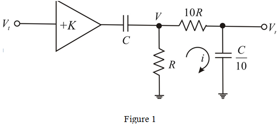

Find the current from the circuit shown in Figure 1.

The voltage  is,
is,
…….. (1)
Refer to Example 10.9 in the text book.
Taped network of Figure 10.40 is shown in Figure 1 in which the components immediately adjacent to the amplifier inputs are raised in impedance to .

Find the current from the circuit shown in Figure 1.
The voltage is,
…….. (1)
Apply Kirchhoff’s current law at node ‘V’.
Further simplification as,
Find the expression for the resulting frequency  and
and  factor.
factor.
The loop transmission is,
Compare the two equations.
Find the value of  by considering the poles.
by considering the poles.
Poles coincide, when .
Therefore, the value of  is .
is .
Find the value of  for the response to become maximally flat, that is, when
for the response to become maximally flat, that is, when
Therefore, the value of  is .
is .
Find the value of  at which the circuit oscillates, that is, when Q tends to infinity
at which the circuit oscillates, that is, when Q tends to infinity
Therefore, the value of  is .
is .